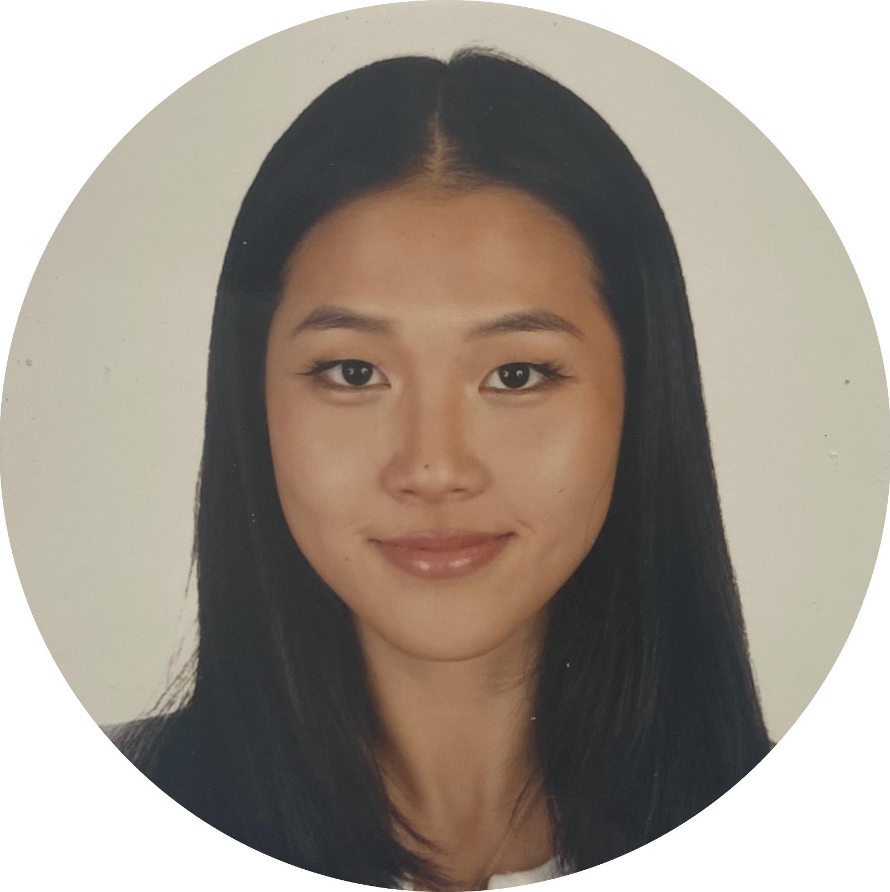

|  |
Brigitte Lee
(279)222-3319 |
|
Wellesley College
Candidate for Bachelor of Arts in Economics and Computer Science |
Expected May 2023 |
Experience |
Dates | |
|---|---|---|
| Bridge Strategy | Consultant, Project Lead |
|
June 2020 - Present |
| Climatebase | Engagement Intern |
|
October - January 2021 |
| Python | ✭✭✭☆☆ |
| Web Development | ✭✭☆☆☆ |
| Mailchimp | ✭✭✭✭☆ |
| Social Media Marketing | ✭✭✭✭☆ |
Boston Children Hospital • Member of Wellesley Boston College Hospital, Senior Nursing Home • Led fundraising for Parkinson’s disease patients